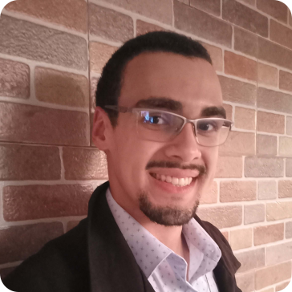

Meu nome é Álvaro Novais, tenho 23 anos e estou em meu último ano de Análise e Desenvolvimento de Sistemas pela FIAP, curso Tecnólogo EAD. Também sou formado em Design de Games pelo Centro Universitário Belas Artes de São Paulo.
Desde o início de minha adolescência, tive um amplo contato com computadores, de forma que sabia que minha carreira estava ligada a eles. Acreditando que seguiria para algum ramo ligado à tecnologia, comecei meus estudos nesta área através de um curso Técnico de Informática integrado ao Ensino Médio. Nele, tive o primeiro contato com Algoritmos, Lógica de Programação, Programação Orientada a Objetos, Desenvolvimento Web. Neste mesmo curso também vi as bases da Manutenção de Hardware.
Durante meu segundo e terceiro ano do Ensino Médio, ajudei a desenvolver um Sistema Gerenciador de Centro de Adoção de Cães e Gatos. A solução principal era Desktop, com dois sistemas auxiliares: um site no qual poderiam ser feitas denúncias de abandono e um aplicativo mobile usado para incentivar a adoção dos animais. Atuei no desenvolvimento Front e Back-End da parte Destkop, utilizando as linguagens Java e SQL para apresentar os dados em tela e enviar novos dados ao Banco de Dados relacional (foi usado o SQL Server).
Nos últimos meses do curso, interessei-me pela área de Desenvolvimento de Jogos Digitais. Isto me levou a cursar minha graduação em Design de Games, com duração de 4 anos. Durante o curso, aprendi sobre os conceitos básicos relacionados a jogos, Engines, Desenho, Roteiro, Animação 2D e 3D; e Metodologias Ágeis. Como ponto de destaque, aprendi a como unir a já conhecida programação a todos os elementos que compõem um jogo digital, seja personagem, inimigos, ambiente, som, interface e outros mais.
Em meu TCC de Games, ajudei a desenvolver um projeto a respeito de cozy games (“jogo aconchegantes”) e a simulação da abertura de um estúdio de desenvolvimento de jogos do mesmo tipo. Fui responsável por escrever boa parte da monografia, fui redator do Plano de Empresa e também auxiliei na codificação de diferentes mecânicas do jogo Campo do Pardal, resultado prático deste trabalho. O jogo foi feito utilizando a game engine Unity3D e a programação foi feita em C#.
Próximo de finalizar o curso, decidi mudar de área. Em 2024, iniciei minha segunda graduação, agora em Análise e Desenvolvimento de Sistemas. Em meu primeiro, revisitei e me aprimorei em meus conhecimentos sobre Programação, Banco de Dados e Desenvolvimento Web, além de melhorar minhas habilidades em pensamento crítico, empatia, empreendedorismo e a busca por soluções de problemas reais; sejam eles a necessidade trazida por uma empresa (em trabalhos acadêmicos colaborativos) ou problemas em escala regional e até global, como combate à poluição, incentivo ao uso de energias renováveis e outros mais.
A respeito de mim, em minhas horas vagas gosto bastante de ler e de bons jogos de cartas e de PC. Sou católico e ativamente integrado em minha paróquia. Cresci fazendo leituras em missas, sou catequista e também cerimoniário, auxiliando na comunidade paroquial de forma tanto formativa pelas aulas que dou aos domingos a crianças e jovens quanto nas celebrações litúrgicas. Estas experiências, aliadas à minha busca por Deus, ajudaram a desenvolver bons relacionamentos interpessoais e saber lidar com diferentes pessoas, mesmo tendo sido bastante tímido na infância.
Em grupo, costumo ser uma pessoa conciliadora entre os diferentes interesses das partes, ajudando a organizar as responsabilidades de cada um e direcioná-las ativamente para o objetivo a ser alcançado. Por conseguinte, normalmente tomo uma postura de liderança que busca dar o exemplo e ajudar cada um a entender seu papel.
Até então, meu principal objetivo é entrar no mercado de trabalho dentro da área de tecnologia. Tenho forte inclinação ao desenvolvimento Front-End, mas nada me impediria de seguir em outro segmento se a oportunidade surgisse.